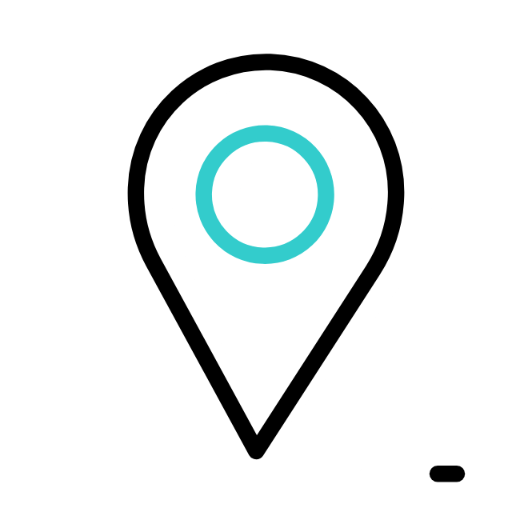

<!DOCTYPE html>
<html lang="en">
<head>
    <meta charset="UTF-8">
    <title>Planeación</title>
    <link rel="stylesheet" href="https://unpkg.com/leaflet@1.9.3/dist/leaflet.css"
    integrity="sha256-kLaT2GOSpHechhsozzB+flnD+zUyjE2LlfWPgU04xyI="
    crossorigin=""/>
    <link rel="stylesheet" type="text/css" href="style/style.css">

    <script src="https://unpkg.com/leaflet@1.9.3/dist/leaflet.js"
    integrity="sha256-WBkoXOwTeyKclOHuWtc+i2uENFpDZ9YPdf5Hf+D7ewM="
    crossorigin=""></script>
    <script src="capas/capasm1.js"></script>
<!-- Agrega el CSS de Leaflet.markercluster -->
<link rel="stylesheet" href="https://cdnjs.cloudflare.com/ajax/libs/leaflet.markercluster/1.4.1/MarkerCluster.css" />
<link rel="stylesheet" href="https://cdnjs.cloudflare.com/ajax/libs/leaflet.markercluster/1.4.1/MarkerCluster.Default.css" />

<!-- Agrega Leaflet y Leaflet.markercluster JS -->
<script src="https://cdn.jsdelivr.net/npm/leaflet@1.7.1/dist/leaflet.js"></script>
<script src="https://cdnjs.cloudflare.com/ajax/libs/leaflet.markercluster/1.4.1/leaflet.markercluster.js"></script>
<script src="src\leaflet-search.js"></script>
<link rel="stylesheet" href="src\leaflet-search.css" />

    <style>
    #map { height: 1080px; }
    body {
    padding: 0;
    margin: 0;
    }
    html, body, #map {
    height: 100%;
    width: 100vw;
    }   
    .info {
    padding: 6px 8px;
    font: 14px/16px Arial, Helvetica, sans-serif;
    background: white;
    background: rgba(105,28,50,0.8);
    color:#DDc9A3;
    box-shadow: 0 0 15px rgba(0,0,0,0.2);
    border-radius: 5px;
    }
    .info h4 {
        font: 14px/16px Arial, Helvetica, sans-serif;
        margin: 0 0 5px;
        color: white;
        font-weight: bold;
    }
    .info h5 {
        font: 26px/28px Arial, Helvetica, sans-serif;
        margin: 0 0 5px;
        color: black;
        font-weight: bold;
    }
    .info h6 {
        font: 20px/22px Arial, Helvetica, sans-serif;
        margin: 0 0 5px;
        color: black;
    }
    .legend {
    line-height: 18px;
    background: rgba(255,255,255,0.7);
    color: black;
}
.legend i {
    width: 18px;
    height: 18px;
    float: left;
    margin-right: 8px;
    opacity: 0.7;
}
.popup {
  background-color: #691c32;
  color: #fff;
  font-size: 14px;
  padding: 10px;
  border-radius: 5px;
}

.popup__title {
  margin-top: 0;
  font-size: 18px;
  font-weight: bold;
}

.popup__text {
  margin: 5px 0;
}
    </style>
</head>
<body>
    <div id="map"></div>
    
    <script>  
    //Mapa inicial donde se carga toda la info
    var map = L.map('map').setView([20.4791, -98.9621,], 8.5);

    //Mapa Base
    var osm= L.tileLayer('https://{s}.tile.openstreetmap.fr/hot/{z}/{x}/{y}.png', {
	maxZoom: 19,
	attribution: ''
}).addTo(map);

    //Marca de Agua CEREBRO
L.Control.Watermark = L.Control.extend({
    onAdd: function(map) {
        var img = L.DomUtil.create('img');

        img.src = 'img/sigeh_centro.png';
        img.style.width = '400px';

        return img;
    },

    onRemove: function(map) {
        // Nothing to do here
    }
});

L.control.watermark = function(opts) {
    return new L.Control.Watermark(opts);
}

L.control.watermark({ position: 'topleft' }).addTo(map);

  //Funciones para coropletas
    function getColor(d) {
  if (d === 1) {
    return '#9ACD32';
  } else if (d === 2) {
    return '#FFD200';
  } else if (d === 3) {
    return '#FF0000';
  } else {
    return '#FFEDA0'; // Color por defecto si no coincide con ninguna de las opciones anteriores
  }
}

//estilos
function generateStyleFunction(suffix) {
  return function(feature) {
    return {
      fillColor: getColor(feature.properties['m1_4_' + suffix]), // Cambiar a cualquier color que desees
      fillOpacity: 1, // Cambiar la opacidad del relleno
      color: '#235b4e', // Cambiar el color del borde
      weight: 1, // Cambiar el grosor del borde
    };
  };
}

indicadores=3
// Generar funciones de estilo para m1_1_1 a m1_1_7
var styleFunctions = [];
for (var i = 1; i <= indicadores; i++) {
  styleFunctions.push(generateStyleFunction(i.toString()));
}

// Ejemplo de uso: obtener el estilo para m1_1_3
var style1 = styleFunctions[0]; // el índice 2 corresponde a m1_1_3
var style2 = styleFunctions[1]
var style3 = styleFunctions[2]
//var style4 = styleFunctions[3]
//var style5 = styleFunctions[4]
//var style6 = styleFunctions[5]
//var style7 = styleFunctions[6]


//EVENTO PARA RESALTAR CON HOVER Y REGRESAR AL ESTILO PRINCIPAL CUANDO SE QUITA EL HOVER
function highlightFeature(e) {
    var layer = e.target;

    layer.setStyle({
        weight: 3,
        color: 'white',
        dashArray: '',
        fillOpacity: 0.7
    });

    layer.bringToFront();
    info.update(layer.feature.properties);
}

function resetHighlight(e) {
    var layer = e.target;
    var style = layer.options.style(layer.feature);

    layer.setStyle(style);
    info.update();
}

function zoomToFeature(e) {
    map.fitBounds(e.target.getBounds());
}
function onEachFeature(feature, layer) {
    layer.on({
        mouseover: highlightFeature,
        mouseout: resetHighlight,
        click: zoomToFeature
    });
}

//SECCIÓN CAPAS
var estructuras = [];

// Generar las variables de estructura en un bucle
for (var i = 1; i <= indicadores; i++) {
  var estructura = L.geoJson(estructura1_4, {
    style: window['style' + i],
    onEachFeature: onEachFeature
  });
  estructuras.push(estructura);
}

// Ejemplo de uso: acceder a las variables de estructura
var estructura1 = estructuras[0];
var estructura2 = estructuras[1];
var estructura3 = estructuras[2];
//var estructura4 = estructuras[3];

//Caja con información
var info = L.control();

info.onAdd = function (map) {
    this._div = L.DomUtil.create('div', 'info'); // create a div with a class "info"
    this.update();
    return this._div;
};

// method that we will use to update the control based on feature properties passed
info.update = function (props) {
    this._div.innerHTML = ' <h4>Indicadores Sobre el tema "Estructura"</h4><br>' + (props ?
    `   <b style="color: white;font-size: 26px;text-align: center">${props.NOMGEO.toUpperCase()}</b><br /><br />
        <b style="font-size: 17px">Programa anual de auditoría interna</b>: <span style="font-size: 20px;color:white;font-weight: bold">${props.m1_4_1}</span><br /><br />
        <b style="font-size: 17px">Lineamientos para la entrega-recepción<br> de la administración<br>pública municipal</b>: <span style="font-size: 20px;color:white;font-weight: bold">${props.m1_4_2}</span><br /><br />
        <b style="font-size: 17px">Tasa de observaciones documentadas<br>en las auditorías internas</b>: <span style="font-size: 20px;color:white;font-weight: bold">${props.m1_4_3}</span><br /><br />`
        : 'Selecciona algún municipio');
};
info.addTo(map);  

//Sección de LEYENDAS
// Leyenda de la capa población
var legend = L.control({position: 'bottomright'});

legend.onAdd = function (map) {
  var div = L.DomUtil.create('div', 'info legend');
  var grades = [1, 2, 3];
  var labels = [];

  // Agregar título
  div.innerHTML = '<h5>Ponderación</h5>';

  // Agregar etiquetas a la leyenda
  for (var i = 0; i < grades.length; i++) {
    var label;
    var grade = grades[i];
    
    if (grade === 1) {
      label = '<h6>Óptimo</h6>';
    } else if (grade === 2) {
      label = '<h6>En Proceso</h6>';
    } else if (grade === 3) {
      label = '<h6>Rezago</h6>';
    } else {
      label = 'N/A';
    }

    labels.push(
      '<i style="background:' + getColor(grade) + '"></i> ' +
      label
    );
  }

  div.innerHTML += labels.join('<br>');
  return div;
};

var baseMaps = {

   /* "Mapa clásico": osm,*/
    
};
var baseMaps1 = {
};
var pobla = {
    //"   Indicadores Sobre el tema "Estructura": markers,
    " 1.4.1 Programa anual de capacitación para<br>servidores públicos municipales": estructura1.addTo(map),
    " 1.4.2 Evaluación de la capacitación": estructura2, 
    "1.4.3 Servidoras y servidores púbclicos capacitado(as)": estructura3,  
};

//Se agrega un Control de capas
var layerControl = L.control.layers(baseMaps, pobla,{collapsed: false, position: 'bottomleft'}).addTo(map);
// Se agrega una barra de escala
L.control.scale({position: 'bottomright'}).addTo(map);

// Agregar el control de leyenda al mapa
legend.addTo(map);

var searchControl = new L.Control.Search({
       layer: estructura1,
       propertyName: 'NOMGEO',
       circleLocation: false
});

searchControl.on('search_locationfound', function(e) {
       e.layer.setStyle({fillColor: '#3f0', color: '#0f0'});
})
map.addControl(searchControl);


    </script>
</body>
</html>
